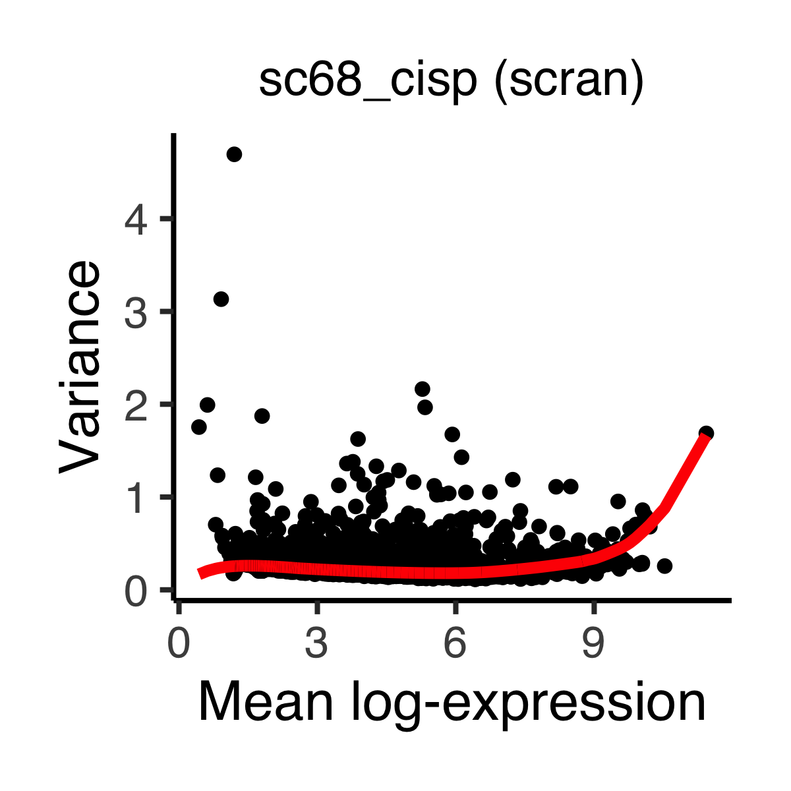
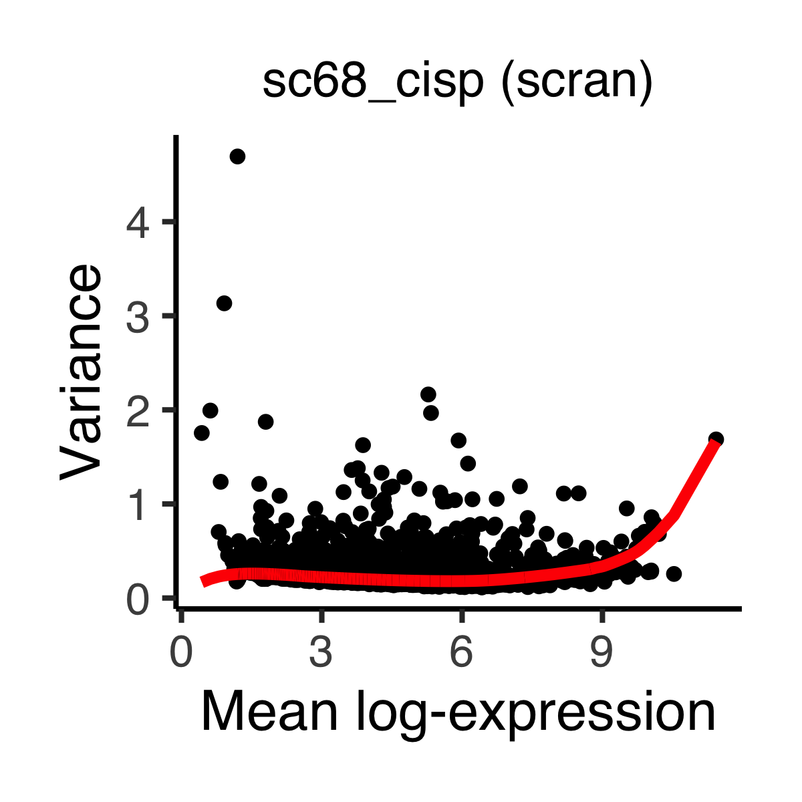
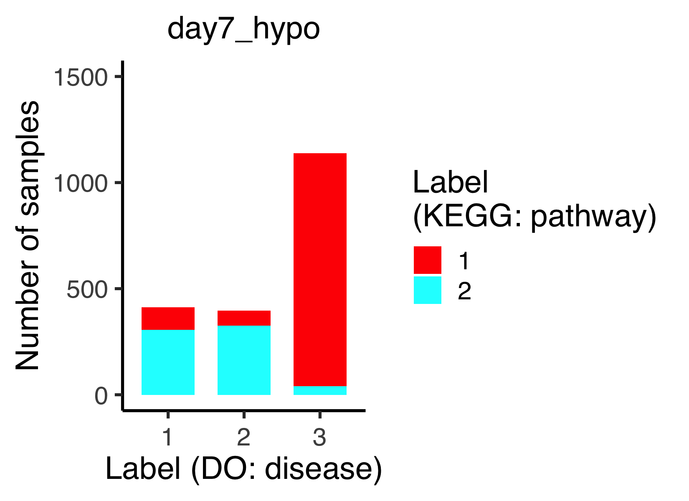
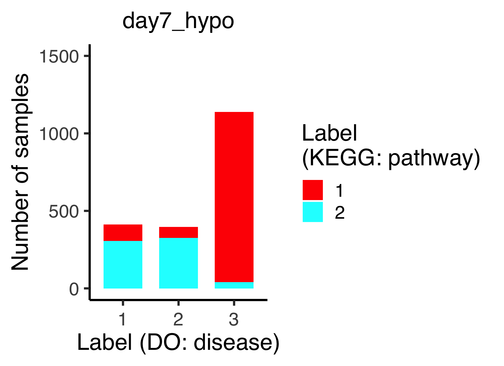
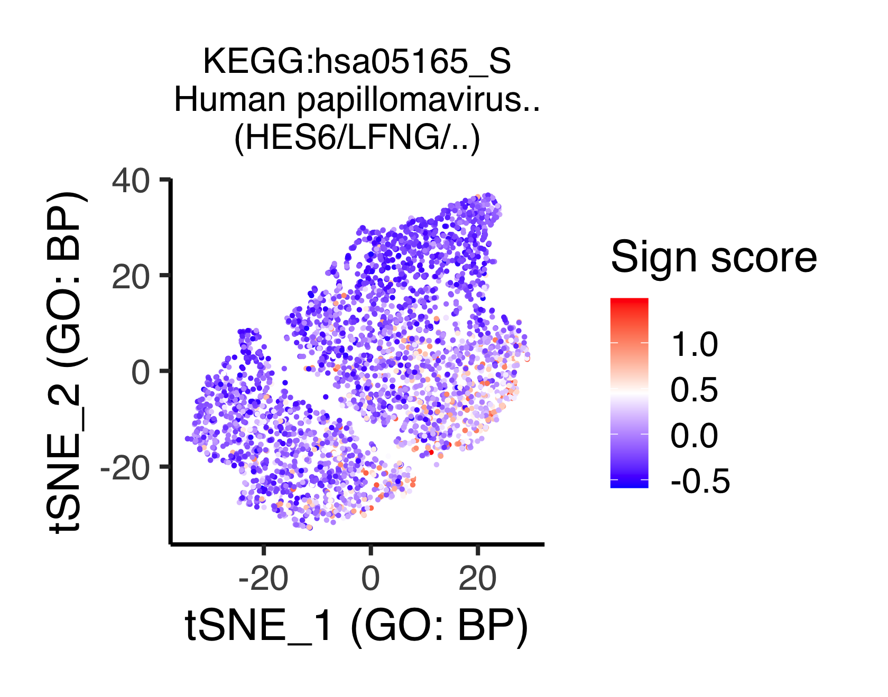

Chapter 13 Multiple sign analysis by concatenating DO, CO, GO, KEGG, and Reactome
In this section, we concatenate all the SSMs by using ASURAT’s functions. Using this multiple sign analysis, users can simultaneously visualize cell states from various viewpoints such as cell type, biological process, signaling pathway, and chemical reaction.
Load the data.
source("R/plot.R")
source("R/function_sign.R")
day1_norm_DO <- readRDS(file = "backup/01_104_day1_norm_DES_DO.rds")
day7_hypo_DO <- readRDS(file = "backup/02_104_day7_hypo_DES_DO.rds")
sc68_vehi_DO <- readRDS(file = "backup/03_104_sc68_vehi_DES_DO.rds")
sc68_cisp_DO <- readRDS(file = "backup/04_104_sc68_cisp_DES_DO.rds")
pbmc_4000_CO <- readRDS(file = "backup/05_104_pbmc_4000_DES_CO.rds")
pbmc_6000_CO <- readRDS(file = "backup/06_104_pbmc_6000_DES_CO.rds")
day1_norm_GO <- readRDS(file = "backup/01_204_day1_norm_DES_GO.rds")
day7_hypo_GO <- readRDS(file = "backup/02_204_day7_hypo_DES_GO.rds")
sc68_vehi_GO <- readRDS(file = "backup/03_204_sc68_vehi_DES_GO.rds")
sc68_cisp_GO <- readRDS(file = "backup/04_204_sc68_cisp_DES_GO.rds")
pbmc_4000_GO <- readRDS(file = "backup/05_204_pbmc_4000_DES_GO.rds")
pbmc_6000_GO <- readRDS(file = "backup/06_204_pbmc_6000_DES_GO.rds")The following function concatenate_obj_sign() concatenates obj2 at the end
of obj1.
day1_norm <- concatenate_obj_sign(obj1 = day1_norm_DO, obj2 = day1_norm_GO)
day7_hypo <- concatenate_obj_sign(obj1 = day7_hypo_DO, obj2 = day7_hypo_GO)
sc68_vehi <- concatenate_obj_sign(obj1 = sc68_vehi_DO, obj2 = sc68_vehi_GO)
sc68_cisp <- concatenate_obj_sign(obj1 = sc68_cisp_DO, obj2 = sc68_cisp_GO)
pbmc_4000 <- concatenate_obj_sign(obj1 = pbmc_4000_CO, obj2 = pbmc_4000_GO)
pbmc_6000 <- concatenate_obj_sign(obj1 = pbmc_6000_CO, obj2 = pbmc_6000_GO)
rm(day1_norm_DO, day7_hypo_DO, sc68_vehi_DO, sc68_cisp_DO,
pbmc_4000_CO, pbmc_6000_CO,
day1_norm_GO, day7_hypo_GO, sc68_vehi_GO, sc68_cisp_GO,
pbmc_4000_GO, pbmc_6000_GO)
day1_norm_KEGG <- readRDS(file = "backup/01_302_day1_norm_reduction_KEGG.rds")
day7_hypo_KEGG <- readRDS(file = "backup/02_304_day7_hypo_DES_KEGG.rds")
sc68_vehi_KEGG <- readRDS(file = "backup/03_302_sc68_vehi_reduction_KEGG.rds")
sc68_cisp_KEGG <- readRDS(file = "backup/04_302_sc68_cisp_reduction_KEGG.rds")
pbmc_4000_KEGG <- readRDS(file = "backup/05_304_pbmc_4000_DES_KEGG.rds")
pbmc_6000_KEGG <- readRDS(file = "backup/06_304_pbmc_6000_DES_KEGG.rds")
day1_norm <- concatenate_obj_sign(obj1 = day1_norm, obj2 = day1_norm_KEGG)
day7_hypo <- concatenate_obj_sign(obj1 = day7_hypo, obj2 = day7_hypo_KEGG)
sc68_vehi <- concatenate_obj_sign(obj1 = sc68_vehi, obj2 = sc68_vehi_KEGG)
sc68_cisp <- concatenate_obj_sign(obj1 = sc68_cisp, obj2 = sc68_cisp_KEGG)
pbmc_4000 <- concatenate_obj_sign(obj1 = pbmc_4000, obj2 = pbmc_4000_KEGG)
pbmc_6000 <- concatenate_obj_sign(obj1 = pbmc_6000, obj2 = pbmc_6000_KEGG)
rm(day1_norm_KEGG, day7_hypo_KEGG, sc68_vehi_KEGG, sc68_cisp_KEGG,
pbmc_4000_KEGG, pbmc_6000_KEGG)
day1_norm_Reactome <-
readRDS(file = "backup/01_402_day1_norm_reduction_Reactome.rds")
day7_hypo_Reactome <-
readRDS(file = "backup/02_402_day7_hypo_reduction_Reactome.rds")
sc68_vehi_Reactome <-
readRDS(file = "backup/03_402_sc68_vehi_reduction_Reactome.rds")
sc68_cisp_Reactome <-
readRDS(file = "backup/04_402_sc68_cisp_reduction_Reactome.rds")
pbmc_4000_Reactome <-
readRDS(file = "backup/05_402_pbmc_4000_reduction_Reactome.rds")
pbmc_6000_Reactome <-
readRDS(file = "backup/06_402_pbmc_6000_reduction_Reactome.rds")
day1_norm <- concatenate_obj_sign(obj1 = day1_norm, obj2 = day1_norm_Reactome)
day7_hypo <- concatenate_obj_sign(obj1 = day7_hypo, obj2 = day7_hypo_Reactome)
sc68_vehi <- concatenate_obj_sign(obj1 = sc68_vehi, obj2 = sc68_vehi_Reactome)
sc68_cisp <- concatenate_obj_sign(obj1 = sc68_cisp, obj2 = sc68_cisp_Reactome)
pbmc_4000 <- concatenate_obj_sign(obj1 = pbmc_4000, obj2 = pbmc_4000_Reactome)
pbmc_6000 <- concatenate_obj_sign(obj1 = pbmc_6000, obj2 = pbmc_6000_Reactome)
rm(day1_norm_Reactome, day7_hypo_Reactome,
sc68_vehi_Reactome, sc68_cisp_Reactome,
pbmc_4000_Reactome, pbmc_6000_Reactome)The following function plot_multiHeatmaps_SignxSamp() vertically concatenates
two or more heat maps.
The arguments are obj (ASURAT object), data_types (vector of data types,
where the first element is used for the sample clustering),
categories (vector of categories, where the first element is used for the
cell clustering), algo_names
(vector of the name of algorithm used for the cell clustering: in the
current version, one of NULL (not "NULL" but NULL), "pam",
"hclustCutree", "seuratFindClusters", and "merlot"), show_classes
(vector of TRUE or FALSE: if TRUE, the classification is shown), split
(if TRUE, the heat map is split by the first element of data_type), method
(agglomeration method to be used, e.g., complete, ward.D2, average, etc.),
show_nReads (if TRUE, number of reads is shown), title, names
(vector of names of the color bar), show_rownames_sign (if TRUE, the name of
sign is shown), show_rownames_label (if TRUE, the name of label is shown),
show_rownames_nReads (if TRUE, the name of number of reads is shown), and
default_colors (vector of TRUE or FALSE for each classification:
if TRUE, the default color of ggplot is used, otherwise rainbow).
Tips:
To check the methods used for clustering, see obj[["sample"]].
# ----------------------------------------
# For `day1_norm`
# ----------------------------------------
filename <- "figures/figure_01_0500.png"
png(file = filename, height = 2500, width = 1500, res = 300)
plot_MultiHeatmaps_SignxSamp(
obj = day1_norm,
data_types = c("DO", "GO", "KEGG"),
categories = c("disease", "BP", "pathway"),
algo_names = c("seuratFindClusters", "seuratFindClusters", NULL),
show_classes = c(TRUE, TRUE, FALSE),
split = TRUE, method = "ward.D2", show_nReads = FALSE,
title = "day1_norm",
names = c("DO: disease", "GO: BP", "KEGG: pathway"),
show_rownames_sign = FALSE, show_rownames_label = FALSE,
show_rownames_nReads = FALSE, default_colors = c(TRUE, FALSE, FALSE))
dev.off() 



The following function plot_MultiBargraphs_sign() shows the population sizes
by two-variable bar graphs.
The arguments are obj, data_type_1 (for the data type in x-axis),
category_1 (for x-axis), algo_name_1 (for x-axix), data_type_2 (for the
data type in y-axis), category_2 (for y-axis), algo_name_2 (for y-axis),
title, title_size, cbar_title (label of the color bar), xlabel,
ylabel, ymax, and default_color (if TRUE, the default color of ggplot
is used, otherwise rainbow).
# ----------------------------------------
# For `day1_norm`
# ----------------------------------------
p <- plot_MultiBargraphs_sign(
obj = day1_norm, data_type_1 = "DO", category_1 = "disease",
algo_name_1 = "seuratFindClusters",
data_type_2 = "GO", category_2 = "BP",
algo_name_2 = "seuratFindClusters",
title = "day1_norm", title_size = 18, cbar_title = "Label\n(GO: BP)",
xlabel = "Label (DO: disease)", ylabel = "Number of samples", ymax = 2000,
default_color = FALSE)
filename <- "figures/figure_01_0501.png"
ggsave(file = filename, plot = p, dpi = 300, width = 5.5, height = 4)
 



The function plot_tsne_signScore(), plot_umap_signScore(), and
plot_dmap_signScore() show the sign score of a given sign on the t-SNE,
UMAP, and diffusion map spaces, respectively.
# ----------------------------------------
# For `day1_norm`
# ----------------------------------------
p <- plot_tsne_signScore(
obj = day1_norm, sign_name = "path:hsa05165_S",
data_type_for_tsne = "DO", category_for_tsne = "disease",
data_type_for_expr = "KEGG", category_for_expr = "pathway",
theta = NULL, phi = NULL,
title = "KEGG:hsa05165_S\nHuman papillomavirus..\n(HES6/LFNG/..)",
title_size = 16, label_name = "Sign score",
xlabel = "tSNE_1 (GO: BP)", ylabel = "tSNE_2 (GO: BP)", zlabel = NULL)
filename <- "figures/figure_01_0505.png"
ggsave(file = filename, plot = p, dpi = 300, width = 5.6, height = 4.4)

Be careful of the meaning of path:hsa05165_S for day7_hypo.


The following function plot_violin_signScore() shows the distribution of
expression levels of a given sign across subpopulations by violin plots.
The arguments are obj, sign_name, data_type_for_label (data_type used
for sample classification), category_for_label (category used for sample
classification), algo_name_for_label (algo_name used for sample
classification), data_type_for_expr (data_type of interest for investigating
gene expression), category_for_expr (category of interest for investigating
gene expression), title, title_size, and default_color (if TRUE,
the default color of ggplot is used, otherwise rainbow).
# ----------------------------------------
# For `sc68_vehi`
# ----------------------------------------
p <- plot_violin_signScore(
obj = sc68_vehi, sign_name = "DOID:5409_S",
data_type_for_label = "GO", category_for_label = "BP",
algo_name_for_label = "seuratFindClusters",
data_type_for_expr = "DO", category_for_expr = "disease",
title = "DOID:5409_S\nLung small cell carcinoma\n(ASCL1/GRP/..)",
title_size = 16, default_color = FALSE)
filename <- "figures/figure_03_0510.png"
ggsave(file = filename, plot = p, dpi = 300, width = 4, height = 4)


The following function plot_pseudotime_vs_signscore() plots expression
levels versus pseudotime for a given sign, in which filled circles, bold lines,
and the shade regions stand for the expression values of samples, mean
expression levels, and standard deviations (this value is 0 if there are less
than three samples), respectively.
The arguments data_type_for_tree and category_for_tree are the data type
and category used for the branch-based classification of samples (i.e., the
labels assigned to the branches), while data_type_for_expr and
category_for_expr for the expression levels of signs of interest.
# ----------------------------------------
# For `sc68_cisp`
# ----------------------------------------
p <- plot_pseudotime_vs_signscore(
obj = sc68_cisp, sign_name = "path:hsa01524_S",
data_type_for_tree = "DO", category_for_tree = "disease",
data_type_for_expr = "KEGG", category_for_expr = "pathway",
title = "KEGG:hsa01524_S\nPlatinum drug resistance\n(TOP2A/BIRC5/..)",
title_size = 22, label_name = "Label\n(DO: disease)",
xlabel = "Pseudotime (DO: disease)", ylabel = "Sign score")
filename <- "figures/figure_04_0510.png"
ggsave(file = filename, plot = p, dpi = 300, width = 7.5, height = 5)


Save the objects.
saveRDS(day1_norm, file = "backup/01_500_day1_norm_all.rds")
saveRDS(day7_hypo, file = "backup/02_500_day7_hypo_all.rds")
saveRDS(sc68_vehi, file = "backup/03_500_sc68_vehi_all.rds")
saveRDS(sc68_cisp, file = "backup/04_500_sc68_cisp_all.rds")
saveRDS(pbmc_4000, file = "backup/05_500_pbmc_4000_all.rds")
saveRDS(pbmc_6000, file = "backup/06_500_pbmc_6000_all.rds")Load the objects.
day1_norm <- readRDS(file = "backup/01_500_day1_norm_all.rds")
day7_hypo <- readRDS(file = "backup/02_500_day7_hypo_all.rds")
sc68_vehi <- readRDS(file = "backup/03_500_sc68_vehi_all.rds")
sc68_cisp <- readRDS(file = "backup/04_500_sc68_cisp_all.rds")
pbmc_4000 <- readRDS(file = "backup/05_500_pbmc_4000_all.rds")
pbmc_6000 <- readRDS(file = "backup/06_500_pbmc_6000_all.rds")